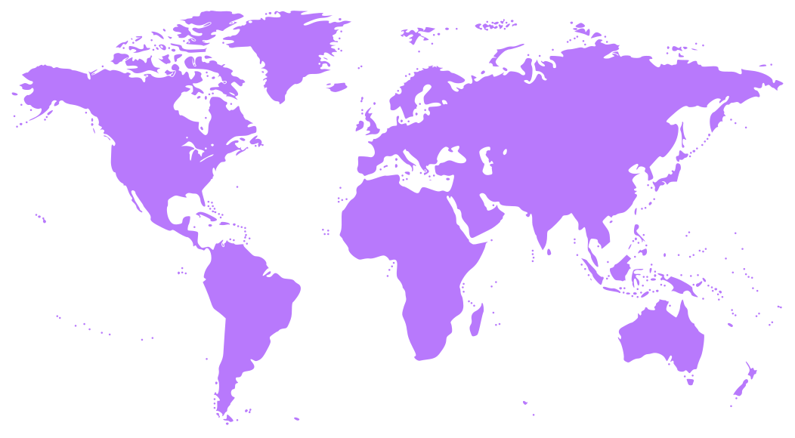

WanderSync is our app that helps organize travel planning by simplifying the creation and management of itineraries for both solo and group trips. The users will be allowed to simultaneously add to the travel plan, organize destinations, arrange for transportation, make accommodation reservations, book dining reservations, and add personal notes—all on one app.
We hope you are able to plan the trips of your dreams, collaborating with your friends however you wish. Include everyone's visiting and dining spots so everyone is sure to have a good time.

This app was created by:
Sumayya Mariyam | Aditi Tripathi | Nithyaa Bala | Roshni Daruvuri | Heeba Eddouh | Hala EddouhNote:
This website was created by Sumayya Mariyam.